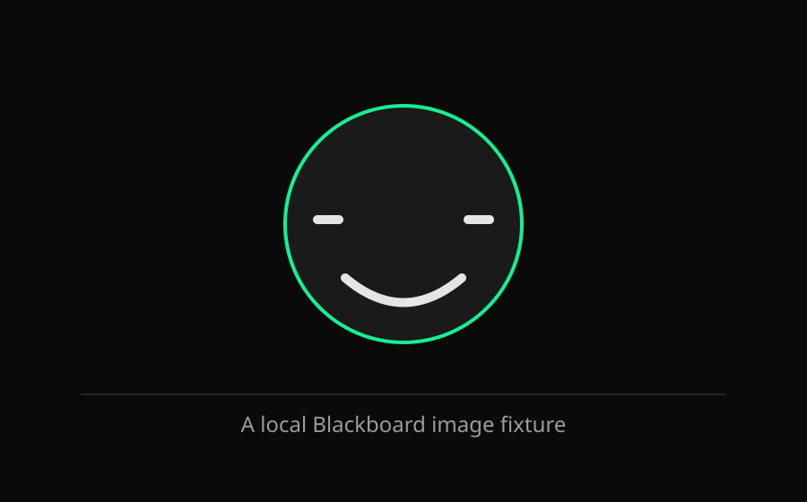

Augmentor's visual display surface. Type a command in the side panel to display content here.
/blackboard — open / focus/draw — canvas diagram/table — data table/doc — markdown document/show <url> — embed webpage/present — slideshow
